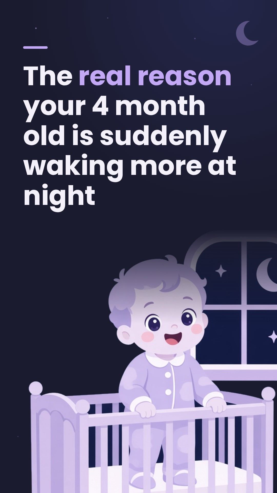

Overview
Revenue vs $1,000 milestone
5.8% of the $1,000 milestone · $942.35 to go · 7 transactions
As of Nov 12, 2:08 PM ET. Source: RevenueCat API, project Napapp (proj2c3279d3): revenue chart total Jun 19-Nov 12 2026, new-trials chart total, overview active subs/trials. Re-pulled from RevenueCat on every scheduled refresh (9 AM / 9 PM ET). All channels, not social attribution.
All platforms combined. Engagement = likes + comments + shares + saves; Eng. Rate = engagement ÷ views. As of: TikTok Nov 12, 12:00 PM ET · Instagram Nov 12, 2:10 PM ET · Facebook Nov 12, 2:10 PM ET. Installs = AppsFlyer installs, iOS 2 + Android 5, since 2026-11-10, as of Nov 12, 2:11 PM ET.
Platforms Summary
To date, by platform
| Platform | Posts | Views | Followers | As of |
|---|---|---|---|---|
TikTok | 40 | 12,539 | 3 | Nov 12, 12:00 PM ET |
Instagram | 33 | 2,320 | 5 | Nov 12, 2:10 PM ET |
Facebook | 33 | 2,947 | 0 | Nov 12, 2:10 PM ET |
| Total | 106 | 17,806 | 8 |
Sources: TikTok = Rivi's snapshot (stats/daily-stats.csv); IG/FB = Meta Graph read (meta/stats/meta_stats.json). Views are per platform (IG/FB views are Reel plays; IG carousels show ~0).
Top 5 Posts (out of 106 total)
 #1
#1 #2
#2 #3
#3 #4
#4
#5Ranked by views across TikTok, Instagram and Facebook (per-platform views, not combined per slug). Third metric is Shares because saves are zero on the current top 5. Thumbnails are our first slide or cover (hosted on media.napapp.io, or a local kit image). As of each platform's read above. Rebuilds on every refresh.
Today · Thu Nov 12
notes
IG+FB: POSTED on IG 9:55 AM ET (https://www.instagram.com/reel/DfpUaMHADAU/) and FB 9:55 AM ET (https://www.facebook.com/reel/1669126944665829/) Nov 12; found live in meta_stats.json. CONFIRMED: Denis, Nov 12 2026 9:58 AM ET (via Napapp Commander), verbatim: "back to work posted on all platforms". KIT packaged Nov 10 2026 ~7:06 PM ET (Bob): 9 x 9:16 stills + Luna captions. Motion D Reels installed in kit (Lee handoff Nov 10 ~7:09 PM ET). STD rebuild approved: Denis, Nov 10 2026 6:58 PM ET (via Napapp Commander), verbatim: "All three Nov 11-12 decks approved." Kits packaged from render-std v2 9:16 stills and Luna STD-FINAL-luna.md captions (no 4:5). SCHEDULE: 2026-11-12 12:30 ET; TikTok carousel only (draft); IG/FB Reel hand-post; no API. Earlier slot notes superseded; no new final approval. Option B (Denis Nov 3 ~5:45 PM ET via Commander, "B: Reels in both IG slots"): IG = slideshow Reel (9:16, Lee), posted BY HAND, no IG API. FB/TikTok unchanged. | Garry: relatable-list v2. New row (Same-day schedule approved by Denis Nov 2 ~3:38 PM ET (via Commander; evening slot 20:00 ET everywhere)). | TikTok: POSTED on TikTok 9:57 AM ET Nov 12 (https://www.tiktok.com/@nap_app/photo/7707299215961001237; found in Rivi's Nov 12 noon snapshot). CONFIRMED: Denis, Nov 12 2026 9:58 AM ET (via Napapp Commander), verbatim: "back to work posted on all platforms". KIT packaged Nov 10 2026 ~7:06 PM ET (Bob): 9 x 9:16 stills + Luna captions. Motion D Reels installed in kit (Lee handoff Nov 10 ~7:09 PM ET). STD rebuild approved: Denis, Nov 10 2026 6:58 PM ET (via Napapp Commander), verbatim: "All three Nov 11-12 decks approved." Kits packaged from render-std v2 9:16 stills and Luna STD-FINAL-luna.md captions (no 4:5). SCHEDULE: 2026-11-12 12:30 ET; TikTok carousel only (draft); IG/FB Reel hand-post; no API. Earlier slot notes superseded; no new final approval. Garry: relatable-list v2. New row (Same-day schedule approved by Denis Nov 2 ~3:38 PM ET (via Commander; evening slot 20:00 ET everywhere)).notes
IG+FB: POSTED on TikTok, IG and FB. Commander, Nov 12 2026 3:40 PM ET: nursery-setup has now been posted on all 3 platforms. Post URLs were not in Rivi's latest TikTok snapshot (Nov 12, 12:00 PM ET) or the last successful Meta read (Nov 12, 2:10 PM ET); a fresh meta/stats_once.sh run timed out on the Graph API, so URLs are left blank. KIT packaged Nov 10 2026 ~7:06 PM ET (Bob): 9 x 9:16 stills + Luna captions. Motion D Reels installed in kit (Lee handoff Nov 10 ~7:09 PM ET). STD rebuild approved: Denis, Nov 10 2026 6:58 PM ET (via Napapp Commander), verbatim: "All three Nov 11-12 decks approved." Kits packaged from render-std v2 9:16 stills and Luna STD-FINAL-luna.md captions (no 4:5). SCHEDULE: 2026-11-12 17:00 ET; TikTok carousel only (draft); IG/FB Reel hand-post; no API. Earlier slot notes superseded; no new final approval. Option B (Denis Nov 3 ~5:45 PM ET via Commander, "B: Reels in both IG slots"): IG = slideshow Reel (9:16, Lee), posted BY HAND, no IG API. FB/TikTok unchanged. | Garry: relatable-list v2; S4 safe-sleep review. New row (Same-day schedule approved by Denis Nov 2 ~3:38 PM ET (via Commander; evening slot 20:00 ET everywhere)). | TikTok: POSTED on TikTok, IG and FB. Commander, Nov 12 2026 3:40 PM ET: nursery-setup has now been posted on all 3 platforms. Post URLs were not in Rivi's latest TikTok snapshot (Nov 12, 12:00 PM ET) or the last successful Meta read (Nov 12, 2:10 PM ET); a fresh meta/stats_once.sh run timed out on the Graph API, so URLs are left blank. KIT packaged Nov 10 2026 ~7:06 PM ET (Bob): 9 x 9:16 stills + Luna captions. Motion D Reels installed in kit (Lee handoff Nov 10 ~7:09 PM ET). STD rebuild approved: Denis, Nov 10 2026 6:58 PM ET (via Napapp Commander), verbatim: "All three Nov 11-12 decks approved." Kits packaged from render-std v2 9:16 stills and Luna STD-FINAL-luna.md captions (no 4:5). SCHEDULE: 2026-11-12 17:00 ET; TikTok carousel only (draft); IG/FB Reel hand-post; no API. Earlier slot notes superseded; no new final approval. Garry: relatable-list v2; S4 safe-sleep review. New row (Same-day schedule approved by Denis Nov 2 ~3:38 PM ET (via Commander; evening slot 20:00 ET everywhere)).notes
IG+FB: HELD 2026-11-11 3:52 PM ET per Denis (how-to week replan, relayed via Garry/Commander): taken off the schedule and replaced by the Nov 12–19 how-to plan (plan/howto-week-nov12-19.md). Do not draft or post. SCHEDULE: 2026-11-12 20:00 ET; TikTok video hand-post; IG/FB Reel hand-post; no API. Earlier slot notes superseded; no new final approval. Nov 9+; moved Overflow -> 2026-11-08 20:00 (Same-day schedule approved by Denis Nov 2 ~3:38 PM ET (via Commander; evening slot 20:00 ET everywhere)) | TikTok: HELD 2026-11-11 3:52 PM ET per Denis (how-to week replan, relayed via Garry/Commander): taken off the schedule and replaced by the Nov 12–19 how-to plan (plan/howto-week-nov12-19.md). Do not draft or post. SCHEDULE: 2026-11-12 20:00 ET; TikTok video hand-post; IG/FB Reel hand-post; no API. Earlier slot notes superseded; no new final approval. tracker: planned, copy not ready yet; moved 2026-11-08 19:00 -> 2026-11-08 20:00 (Same-day schedule approved by Denis Nov 2 ~3:38 PM ET (via Commander; evening slot 20:00 ET everywhere))notes
TikTok: APPROVED: Denis, Nov 11 2026 7:22 PM ET (via Napapp Commander), verbatim: "Batch 1 v2 approved, all 7 posts." Batch 1 v2. Folder posts/2026-11-12-pre-bedtime-routine-5-steps (Bob, Nov 11 7:29 PM ET, from HOWTO-BATCH1-V2-APPROVED-MANIFEST.txt). Look A. TikTok carousel (inbox draft by the routine ~2 h before); IG/FB 9:16 motion D slideshow Reel hand-post; no API; no 4:5. | was: RESERVED 2026-11-11 4:08 PM ET per how-to plan v2 (plan/howto-week-nov12-19-v2.md; Garry, relaying Denis; v1 superseded). Slot reserved for pre-bedtime-routine-5-steps (Pre-bedtime routine: 5 steps that work). Pending Denis's approval. Batch 1 (Nov 12 7 PM through Nov 14): copy written by Luna, awaiting go to render; stays locked until Commander passes on Denis's approval. Look: A (Denis, 4:05 PM ET Nov 11, via Garry 4:08 PM ET). Format: TikTok carousel + IG/FB 9:16 slideshow Reel (never 4:5). No folder, no kit, no draft; not Approved. slot_guard/draft_post/resend_draft refuse a reserved slot. | IG+FB: APPROVED: Denis, Nov 11 2026 7:22 PM ET (via Napapp Commander), verbatim: "Batch 1 v2 approved, all 7 posts." Batch 1 v2. Folder posts/2026-11-12-pre-bedtime-routine-5-steps (Bob, Nov 11 7:29 PM ET, from HOWTO-BATCH1-V2-APPROVED-MANIFEST.txt). Look A. TikTok carousel (inbox draft by the routine ~2 h before); IG/FB 9:16 motion D slideshow Reel hand-post; no API; no 4:5. | was: RESERVED 2026-11-11 4:08 PM ET per how-to plan v2 (plan/howto-week-nov12-19-v2.md; Garry, relaying Denis; v1 superseded). Slot reserved for pre-bedtime-routine-5-steps (Pre-bedtime routine: 5 steps that work). Pending Denis's approval. Batch 1 (Nov 12 7 PM through Nov 14): copy written by Luna, awaiting go to render; stays locked until Commander passes on Denis's approval. Look: A (Denis, 4:05 PM ET Nov 11, via Garry 4:08 PM ET). Format: TikTok carousel + IG/FB 9:16 slideshow Reel (never 4:5). No folder, no kit, no draft; not Approved. slot_guard/draft_post/resend_draft refuse a reserved slot.One row per post; the tags show each platform's time, posted state and how it goes out (Hand-post / Inbox draft / API · needs your go). One approval covers all platforms. Review opens the content to check. Approve copies a short message (e.g. "APPROVE slug all platforms date") and opens your Commander chat in Grok Bot: paste and send it so Commander gets it. Posted is just your own tick, saved on this device.
Next 7 days
22 posts
notes
IG+FB: HELD 2026-11-11 3:52 PM ET per Denis (how-to week replan, relayed via Garry/Commander): the IG/FB repost slot is taken off the schedule; the original TikTok post stays posted. Do not draft or post the Meta catch-up. See plan/howto-week-nov12-19.md. SCHEDULE: 2026-11-13 12:30 ET; TikTok skip repeat; IG/FB Reel hand-post; no API. Earlier slot notes superseded; no new final approval. Moved from Nov 2 12:30 to keep Meta 24h+ after TikTok. (Same-day schedule approved by Denis Nov 2 ~3:38 PM ET (via Commander; evening slot 20:00 ET everywhere))notes
TikTok: APPROVED: Denis, Nov 11 2026 7:22 PM ET (via Napapp Commander), verbatim: "Batch 1 v2 approved, all 7 posts." Batch 1 v2. Folder posts/2026-11-13-toddler-nap-5-ways (Bob, Nov 11 7:41 PM ET, from HOWTO-BATCH1-V2-APPROVED-MANIFEST.txt). Look plain. TikTok carousel (inbox draft by the routine ~2 h before); IG/FB 9:16 motion D slideshow Reel hand-post; no API; no 4:5. | was: RESERVED 2026-11-11 4:08 PM ET per how-to plan v2 (plan/howto-week-nov12-19-v2.md; Garry, relaying Denis; v1 superseded). Slot reserved for toddler-nap-5-ways (5 ways to get a toddler to nap). Pending Denis's approval. Batch 1 (Nov 12 7 PM through Nov 14): copy written by Luna, awaiting go to render; stays locked until Commander passes on Denis's approval. Look: plain (Denis, 4:05 PM ET Nov 11, via Garry 4:08 PM ET). Format: TikTok carousel + IG/FB 9:16 slideshow Reel (never 4:5). No folder, no kit, no draft; not Approved. slot_guard/draft_post/resend_draft refuse a reserved slot. | IG+FB: APPROVED: Denis, Nov 11 2026 7:22 PM ET (via Napapp Commander), verbatim: "Batch 1 v2 approved, all 7 posts." Batch 1 v2. Folder posts/2026-11-13-toddler-nap-5-ways (Bob, Nov 11 7:41 PM ET, from HOWTO-BATCH1-V2-APPROVED-MANIFEST.txt). Look plain. TikTok carousel (inbox draft by the routine ~2 h before); IG/FB 9:16 motion D slideshow Reel hand-post; no API; no 4:5. | was: RESERVED 2026-11-11 4:08 PM ET per how-to plan v2 (plan/howto-week-nov12-19-v2.md; Garry, relaying Denis; v1 superseded). Slot reserved for toddler-nap-5-ways (5 ways to get a toddler to nap). Pending Denis's approval. Batch 1 (Nov 12 7 PM through Nov 14): copy written by Luna, awaiting go to render; stays locked until Commander passes on Denis's approval. Look: plain (Denis, 4:05 PM ET Nov 11, via Garry 4:08 PM ET). Format: TikTok carousel + IG/FB 9:16 slideshow Reel (never 4:5). No folder, no kit, no draft; not Approved. slot_guard/draft_post/resend_draft refuse a reserved slot.notes
TikTok: APPROVED: Denis, Nov 11 2026 7:22 PM ET (via Napapp Commander), verbatim: "Batch 1 v2 approved, all 7 posts." Batch 1 v2. Folder posts/2026-11-13-drowsy-but-awake-5-ways (Bob, Nov 11 7:41 PM ET, from HOWTO-BATCH1-V2-APPROVED-MANIFEST.txt). Look A. TikTok carousel (inbox draft by the routine ~2 h before); IG/FB 9:16 motion D slideshow Reel hand-post; no API; no 4:5. | was: RESERVED 2026-11-11 4:08 PM ET per how-to plan v2 (plan/howto-week-nov12-19-v2.md; Garry, relaying Denis; v1 superseded). Slot reserved for drowsy-but-awake-5-ways (Drowsy but awake: 5 ways to practise it). Pending Denis's approval. Batch 1 (Nov 12 7 PM through Nov 14): copy written by Luna, awaiting go to render; stays locked until Commander passes on Denis's approval. Look: A (Denis, 4:05 PM ET Nov 11, via Garry 4:08 PM ET). Format: TikTok carousel + IG/FB 9:16 slideshow Reel (never 4:5). No folder, no kit, no draft; not Approved. slot_guard/draft_post/resend_draft refuse a reserved slot. | IG+FB: APPROVED: Denis, Nov 11 2026 7:22 PM ET (via Napapp Commander), verbatim: "Batch 1 v2 approved, all 7 posts." Batch 1 v2. Folder posts/2026-11-13-drowsy-but-awake-5-ways (Bob, Nov 11 7:41 PM ET, from HOWTO-BATCH1-V2-APPROVED-MANIFEST.txt). Look A. TikTok carousel (inbox draft by the routine ~2 h before); IG/FB 9:16 motion D slideshow Reel hand-post; no API; no 4:5. | was: RESERVED 2026-11-11 4:08 PM ET per how-to plan v2 (plan/howto-week-nov12-19-v2.md; Garry, relaying Denis; v1 superseded). Slot reserved for drowsy-but-awake-5-ways (Drowsy but awake: 5 ways to practise it). Pending Denis's approval. Batch 1 (Nov 12 7 PM through Nov 14): copy written by Luna, awaiting go to render; stays locked until Commander passes on Denis's approval. Look: A (Denis, 4:05 PM ET Nov 11, via Garry 4:08 PM ET). Format: TikTok carousel + IG/FB 9:16 slideshow Reel (never 4:5). No folder, no kit, no draft; not Approved. slot_guard/draft_post/resend_draft refuse a reserved slot.notes
TikTok: APPROVED: Denis, Nov 11 2026 7:22 PM ET (via Napapp Commander), verbatim: "Batch 1 v2 approved, all 7 posts." Batch 1 v2. Folder posts/2026-11-13-night-feeds-4-steps (Bob, Nov 11 7:41 PM ET, from HOWTO-BATCH1-V2-APPROVED-MANIFEST.txt). Look A. TikTok carousel (inbox draft by the routine ~2 h before); IG/FB 9:16 motion D slideshow Reel hand-post; no API; no 4:5. | was: RESERVED 2026-11-11 4:08 PM ET per how-to plan v2 (plan/howto-week-nov12-19-v2.md; Garry, relaying Denis; v1 superseded). Slot reserved for night-feeds-4-steps (Night feeds: 4 steps to keep them sleepy). Pending Denis's approval. Batch 1 (Nov 12 7 PM through Nov 14): copy written by Luna, awaiting go to render; stays locked until Commander passes on Denis's approval. Look: A (Denis, 4:05 PM ET Nov 11, via Garry 4:08 PM ET). Replaces v1 slug dream-feed-4-steps (failed claims check). Format: TikTok carousel + IG/FB 9:16 slideshow Reel (never 4:5). No folder, no kit, no draft; not Approved. slot_guard/draft_post/resend_draft refuse a reserved slot. | IG+FB: APPROVED: Denis, Nov 11 2026 7:22 PM ET (via Napapp Commander), verbatim: "Batch 1 v2 approved, all 7 posts." Batch 1 v2. Folder posts/2026-11-13-night-feeds-4-steps (Bob, Nov 11 7:41 PM ET, from HOWTO-BATCH1-V2-APPROVED-MANIFEST.txt). Look A. TikTok carousel (inbox draft by the routine ~2 h before); IG/FB 9:16 motion D slideshow Reel hand-post; no API; no 4:5. | was: RESERVED 2026-11-11 4:08 PM ET per how-to plan v2 (plan/howto-week-nov12-19-v2.md; Garry, relaying Denis; v1 superseded). Slot reserved for night-feeds-4-steps (Night feeds: 4 steps to keep them sleepy). Pending Denis's approval. Batch 1 (Nov 12 7 PM through Nov 14): copy written by Luna, awaiting go to render; stays locked until Commander passes on Denis's approval. Look: A (Denis, 4:05 PM ET Nov 11, via Garry 4:08 PM ET). Replaces v1 slug dream-feed-4-steps (failed claims check). Format: TikTok carousel + IG/FB 9:16 slideshow Reel (never 4:5). No folder, no kit, no draft; not Approved. slot_guard/draft_post/resend_draft refuse a reserved slot.notes
IG+FB: HELD 2026-11-11 3:52 PM ET per Denis (how-to week replan, relayed via Garry/Commander): taken off the schedule and replaced by the Nov 12–19 how-to plan (plan/howto-week-nov12-19.md). Do not draft or post. SCHEDULE: 2026-11-13 20:00 ET; TikTok carousel only (draft); IG/FB Reel hand-post; no API. Earlier slot notes superseded; no new final approval. Option B (Denis Nov 3 ~5:45 PM ET via Commander, "B: Reels in both IG slots"): IG = slideshow Reel (9:16, Lee), posted BY HAND, no IG API. FB/TikTok unchanged. | Garry: relatable-list v2. New row (Same-day schedule approved by Denis Nov 2 ~3:38 PM ET (via Commander; evening slot 20:00 ET everywhere)). | TikTok: HELD 2026-11-11 3:52 PM ET per Denis (how-to week replan, relayed via Garry/Commander): taken off the schedule and replaced by the Nov 12–19 how-to plan (plan/howto-week-nov12-19.md). Do not draft or post. SCHEDULE: 2026-11-13 20:00 ET; TikTok carousel only (draft); IG/FB Reel hand-post; no API. Earlier slot notes superseded; no new final approval. Garry: relatable-list v2. New row (Same-day schedule approved by Denis Nov 2 ~3:38 PM ET (via Commander; evening slot 20:00 ET everywhere)).notes
IG+FB: HELD 2026-11-11 3:52 PM ET per Denis (how-to week replan, relayed via Garry/Commander): taken off the schedule and replaced by the Nov 12–19 how-to plan (plan/howto-week-nov12-19.md). Do not draft or post. SCHEDULE: 2026-11-14 12:30 ET; TikTok carousel only (draft); IG/FB Reel hand-post; no API. Earlier slot notes superseded; no new final approval. Option B (Denis Nov 3 ~5:45 PM ET via Commander, "B: Reels in both IG slots"): IG = slideshow Reel (9:16, Lee), posted BY HAND, no IG API. FB/TikTok unchanged. | Tentative (Garry Nov 1); was 2026-11-03 12:30; depends on Denis confirming slots; moved 2026-11-10 20:00 -> 2026-11-16 12:30 (Same-day schedule approved by Denis Nov 2 ~3:38 PM ET (via Commander; evening slot 20:00 ET everywhere)) | TikTok: HELD 2026-11-11 3:52 PM ET per Denis (how-to week replan, relayed via Garry/Commander): taken off the schedule and replaced by the Nov 12–19 how-to plan (plan/howto-week-nov12-19.md). Do not draft or post. SCHEDULE: 2026-11-14 12:30 ET; TikTok carousel only (draft); IG/FB Reel hand-post; no API. Earlier slot notes superseded; no new final approval. Tentative (Garry Nov 1); was 2026-11-02 12:30; depends on Denis confirming slots; moved 2026-11-09 12:30 -> 2026-11-16 12:30 (Same-day schedule approved by Denis Nov 2 ~3:38 PM ET (via Commander; evening slot 20:00 ET everywhere))notes
TikTok: APPROVED: Denis, Nov 11 2026 7:22 PM ET (via Napapp Commander), verbatim: "Batch 1 v2 approved, all 7 posts." Batch 1 v2. Folder posts/2026-11-14-swaddle-to-sleep-sack (Bob, Nov 11 7:41 PM ET, from HOWTO-BATCH1-V2-APPROVED-MANIFEST.txt). Look A. TikTok carousel (inbox draft by the routine ~2 h before); IG/FB 9:16 motion D slideshow Reel hand-post; no API; no 4:5. | was: RESERVED 2026-11-11 4:08 PM ET per how-to plan v2 (plan/howto-week-nov12-19-v2.md; Garry, relaying Denis; v1 superseded). Slot reserved for swaddle-to-sleep-sack (Swaddle to sleep sack: 5 transition tips). Pending Denis's approval. Batch 1 (Nov 12 7 PM through Nov 14): copy written by Luna, awaiting go to render; stays locked until Commander passes on Denis's approval. Look: A (Denis, 4:05 PM ET Nov 11, via Garry 4:08 PM ET). Moved from Nov 14 13:00 (v1) to Nov 14 09:00 (v2). Format: TikTok carousel + IG/FB 9:16 slideshow Reel (never 4:5). No folder, no kit, no draft; not Approved. slot_guard/draft_post/resend_draft refuse a reserved slot. | IG+FB: APPROVED: Denis, Nov 11 2026 7:22 PM ET (via Napapp Commander), verbatim: "Batch 1 v2 approved, all 7 posts." Batch 1 v2. Folder posts/2026-11-14-swaddle-to-sleep-sack (Bob, Nov 11 7:41 PM ET, from HOWTO-BATCH1-V2-APPROVED-MANIFEST.txt). Look A. TikTok carousel (inbox draft by the routine ~2 h before); IG/FB 9:16 motion D slideshow Reel hand-post; no API; no 4:5. | was: RESERVED 2026-11-11 4:08 PM ET per how-to plan v2 (plan/howto-week-nov12-19-v2.md; Garry, relaying Denis; v1 superseded). Slot reserved for swaddle-to-sleep-sack (Swaddle to sleep sack: 5 transition tips). Pending Denis's approval. Batch 1 (Nov 12 7 PM through Nov 14): copy written by Luna, awaiting go to render; stays locked until Commander passes on Denis's approval. Look: A (Denis, 4:05 PM ET Nov 11, via Garry 4:08 PM ET). Moved from Nov 14 13:00 (v1) to Nov 14 09:00 (v2). Format: TikTok carousel + IG/FB 9:16 slideshow Reel (never 4:5). No folder, no kit, no draft; not Approved. slot_guard/draft_post/resend_draft refuse a reserved slot.notes
TikTok: APPROVED: Denis, Nov 11 2026 7:22 PM ET (via Napapp Commander), verbatim: "Batch 1 v2 approved, all 7 posts." Batch 1 v2. Folder posts/2026-11-14-4-month-naps-how-to (Bob, Nov 11 7:41 PM ET, from HOWTO-BATCH1-V2-APPROVED-MANIFEST.txt). Look plain. TikTok carousel (inbox draft by the routine ~2 h before); IG/FB 9:16 motion D slideshow Reel hand-post; no API; no 4:5. | was: RESERVED 2026-11-11 4:08 PM ET per how-to plan v2 (plan/howto-week-nov12-19-v2.md; Garry, relaying Denis; v1 superseded). Slot reserved for 4-month-naps-how-to (4-month naps: 5 ways to make them easier). Pending Denis's approval. Batch 1 (Nov 12 7 PM through Nov 14): copy written by Luna, awaiting go to render; stays locked until Commander passes on Denis's approval. Look: plain (Denis, 4:05 PM ET Nov 11, via Garry 4:08 PM ET). Replaces v1 slug sample-day-4-months; slot is Nov 14 13:00 (v1 had this slug's predecessor at 09:00). Format: TikTok carousel + IG/FB 9:16 slideshow Reel (never 4:5). No folder, no kit, no draft; not Approved. slot_guard/draft_post/resend_draft refuse a reserved slot. | IG+FB: APPROVED: Denis, Nov 11 2026 7:22 PM ET (via Napapp Commander), verbatim: "Batch 1 v2 approved, all 7 posts." Batch 1 v2. Folder posts/2026-11-14-4-month-naps-how-to (Bob, Nov 11 7:41 PM ET, from HOWTO-BATCH1-V2-APPROVED-MANIFEST.txt). Look plain. TikTok carousel (inbox draft by the routine ~2 h before); IG/FB 9:16 motion D slideshow Reel hand-post; no API; no 4:5. | was: RESERVED 2026-11-11 4:08 PM ET per how-to plan v2 (plan/howto-week-nov12-19-v2.md; Garry, relaying Denis; v1 superseded). Slot reserved for 4-month-naps-how-to (4-month naps: 5 ways to make them easier). Pending Denis's approval. Batch 1 (Nov 12 7 PM through Nov 14): copy written by Luna, awaiting go to render; stays locked until Commander passes on Denis's approval. Look: plain (Denis, 4:05 PM ET Nov 11, via Garry 4:08 PM ET). Replaces v1 slug sample-day-4-months; slot is Nov 14 13:00 (v1 had this slug's predecessor at 09:00). Format: TikTok carousel + IG/FB 9:16 slideshow Reel (never 4:5). No folder, no kit, no draft; not Approved. slot_guard/draft_post/resend_draft refuse a reserved slot.notes
IG+FB: HELD 2026-11-11 3:52 PM ET per Denis (how-to week replan, relayed via Garry/Commander): taken off the schedule and replaced by the Nov 12–19 how-to plan (plan/howto-week-nov12-19.md). Do not draft or post. SCHEDULE: 2026-11-14 17:00 ET; TikTok carousel only (draft); IG/FB Reel hand-post; no API. Earlier slot notes superseded; no new final approval. Option B (Denis Nov 3 ~5:45 PM ET via Commander, "B: Reels in both IG slots"): IG = slideshow Reel (9:16, Lee), posted BY HAND, no IG API. FB/TikTok unchanged. | Nov 9+; moved Overflow -> 2026-11-17 12:30 (Same-day schedule approved by Denis Nov 2 ~3:38 PM ET (via Commander; evening slot 20:00 ET everywhere)) | TikTok: HELD 2026-11-11 3:52 PM ET per Denis (how-to week replan, relayed via Garry/Commander): taken off the schedule and replaced by the Nov 12–19 how-to plan (plan/howto-week-nov12-19.md). Do not draft or post. SCHEDULE: 2026-11-14 17:00 ET; TikTok carousel only (draft); IG/FB Reel hand-post; no API. Earlier slot notes superseded; no new final approval. tracker: planned, copy not ready yet; moved 2026-11-08 12:30 -> 2026-11-17 12:30 (Same-day schedule approved by Denis Nov 2 ~3:38 PM ET (via Commander; evening slot 20:00 ET everywhere))notes
TikTok: APPROVED: Denis, Nov 11 2026 7:22 PM ET (via Napapp Commander), verbatim: "Batch 1 v2 approved, all 7 posts." Batch 1 v2. Folder posts/2026-11-14-calm-fussy-newborn-5-ways (Bob, Nov 11 7:41 PM ET, from HOWTO-BATCH1-V2-APPROVED-MANIFEST.txt). Look plain. TikTok carousel (inbox draft by the routine ~2 h before); IG/FB 9:16 motion D slideshow Reel hand-post; no API; no 4:5. | was: RESERVED 2026-11-11 4:08 PM ET per how-to plan v2 (plan/howto-week-nov12-19-v2.md; Garry, relaying Denis; v1 superseded). Slot reserved for calm-fussy-newborn-5-ways (Fussy newborn at night? 5 ways to calm). Pending Denis's approval. Batch 1 (Nov 12 7 PM through Nov 14): copy written by Luna, awaiting go to render; stays locked until Commander passes on Denis's approval. Look: plain (Denis, 4:05 PM ET Nov 11, via Garry 4:08 PM ET). Format: TikTok carousel + IG/FB 9:16 slideshow Reel (never 4:5). No folder, no kit, no draft; not Approved. slot_guard/draft_post/resend_draft refuse a reserved slot. | IG+FB: APPROVED: Denis, Nov 11 2026 7:22 PM ET (via Napapp Commander), verbatim: "Batch 1 v2 approved, all 7 posts." Batch 1 v2. Folder posts/2026-11-14-calm-fussy-newborn-5-ways (Bob, Nov 11 7:41 PM ET, from HOWTO-BATCH1-V2-APPROVED-MANIFEST.txt). Look plain. TikTok carousel (inbox draft by the routine ~2 h before); IG/FB 9:16 motion D slideshow Reel hand-post; no API; no 4:5. | was: RESERVED 2026-11-11 4:08 PM ET per how-to plan v2 (plan/howto-week-nov12-19-v2.md; Garry, relaying Denis; v1 superseded). Slot reserved for calm-fussy-newborn-5-ways (Fussy newborn at night? 5 ways to calm). Pending Denis's approval. Batch 1 (Nov 12 7 PM through Nov 14): copy written by Luna, awaiting go to render; stays locked until Commander passes on Denis's approval. Look: plain (Denis, 4:05 PM ET Nov 11, via Garry 4:08 PM ET). Format: TikTok carousel + IG/FB 9:16 slideshow Reel (never 4:5). No folder, no kit, no draft; not Approved. slot_guard/draft_post/resend_draft refuse a reserved slot.notes
IG+FB: HELD 2026-11-11 3:52 PM ET per Denis (how-to week replan, relayed via Garry/Commander): taken off the schedule and replaced by the Nov 12–19 how-to plan (plan/howto-week-nov12-19.md). Do not draft or post. SCHEDULE: 2026-11-14 20:00 ET; TikTok carousel only (draft); IG/FB Reel hand-post; no API. Earlier slot notes superseded; no new final approval. Option B (Denis Nov 3 ~5:45 PM ET via Commander, "B: Reels in both IG slots"): IG = slideshow Reel (9:16, Lee), posted BY HAND, no IG API. FB/TikTok unchanged. | Garry: relatable-list v2. New row (Same-day schedule approved by Denis Nov 2 ~3:38 PM ET (via Commander; evening slot 20:00 ET everywhere)). | TikTok: HELD 2026-11-11 3:52 PM ET per Denis (how-to week replan, relayed via Garry/Commander): taken off the schedule and replaced by the Nov 12–19 how-to plan (plan/howto-week-nov12-19.md). Do not draft or post. SCHEDULE: 2026-11-14 20:00 ET; TikTok carousel only (draft); IG/FB Reel hand-post; no API. Earlier slot notes superseded; no new final approval. Garry: relatable-list v2. New row (Same-day schedule approved by Denis Nov 2 ~3:38 PM ET (via Commander; evening slot 20:00 ET everywhere)).notes
TikTok: RESERVED 2026-11-11 4:08 PM ET per how-to plan v2 (plan/howto-week-nov12-19-v2.md; Garry, relaying Denis; v1 superseded). Slot reserved for night-wake-settle-5-steps. Pending Denis's approval. Next (topics only, re-scored after each 2-day read per v2): stays locked until Commander passes on Denis's approval, batch by batch. Format: TikTok carousel + IG/FB 9:16 slideshow Reel (never 4:5). No folder, no kit, no draft; not Approved. slot_guard/draft_post/resend_draft refuse a reserved slot. | IG+FB: RESERVED 2026-11-11 4:08 PM ET per how-to plan v2 (plan/howto-week-nov12-19-v2.md; Garry, relaying Denis; v1 superseded). Slot reserved for night-wake-settle-5-steps. Pending Denis's approval. Next (topics only, re-scored after each 2-day read per v2): stays locked until Commander passes on Denis's approval, batch by batch. Format: TikTok carousel + IG/FB 9:16 slideshow Reel (never 4:5). No folder, no kit, no draft; not Approved. slot_guard/draft_post/resend_draft refuse a reserved slot.notes
IG+FB: HELD 2026-11-11 3:52 PM ET per Denis (how-to week replan, relayed via Garry/Commander): the IG/FB repost slot is taken off the schedule; the original TikTok post stays posted. Do not draft or post the Meta catch-up. See plan/howto-week-nov12-19.md. SCHEDULE: 2026-11-15 12:30 ET; TikTok skip repeat; IG/FB Reel hand-post; no API. Earlier slot notes superseded; no new final approval. Garry: Meta catch-up (TikTok carousel Oct 25; was in Oct 27 IG/FB queue for Nov 8, fell out Oct 28). IG/FB as Reel; wake-window near-repeat risk vs wake-windows-0-6m + recap on IG/FB, Denis decides. TikTok 19:00 empty. New row (Same-day schedule approved by Denis Nov 2 ~3:38 PM ET (via Commander; evening slot 20:00 ET everywhere)). | Nov 4 1:45 PM ET: approval shared with TikTok per Denis's rule ("if it's approved for 1 platform it will also be approved for the other"). STATUS CHANGE ONLY: hand-post, not scheduled/staged; no IG/FB publish without Denis's go.notes
TikTok: RESERVED 2026-11-11 4:08 PM ET per how-to plan v2 (plan/howto-week-nov12-19-v2.md; Garry, relaying Denis; v1 superseded). Slot reserved for nap-wind-down-4-steps. Pending Denis's approval. Next (topics only, re-scored after each 2-day read per v2): stays locked until Commander passes on Denis's approval, batch by batch. Format: TikTok carousel + IG/FB 9:16 slideshow Reel (never 4:5). No folder, no kit, no draft; not Approved. slot_guard/draft_post/resend_draft refuse a reserved slot. | IG+FB: RESERVED 2026-11-11 4:08 PM ET per how-to plan v2 (plan/howto-week-nov12-19-v2.md; Garry, relaying Denis; v1 superseded). Slot reserved for nap-wind-down-4-steps. Pending Denis's approval. Next (topics only, re-scored after each 2-day read per v2): stays locked until Commander passes on Denis's approval, batch by batch. Format: TikTok carousel + IG/FB 9:16 slideshow Reel (never 4:5). No folder, no kit, no draft; not Approved. slot_guard/draft_post/resend_draft refuse a reserved slot.notes
TikTok: RESYNC 2026-11-11 ~7:45 PM ET (Garry, batch 2 change): slot now reserved for early-morning-wakes-5-fixes, replacing sleep-log-5-things (sleep-log-5-things dropped and un-reserved). Still RESERVED, pending Denis's approval. | was: RESERVED 2026-11-11 4:08 PM ET per how-to plan v2 (plan/howto-week-nov12-19-v2.md; Garry, relaying Denis; v1 superseded). (v2) Slot reserved for sleep-log-5-things. Pending Denis's approval. Next (topics only, re-scored after each 2-day read per v2): stays locked until Commander passes on Denis's approval, batch by batch. Moved from Nov 19 19:00 (v1). Conversion test in v2; stays Reserved/locked. Format: TikTok carousel + IG/FB 9:16 slideshow Reel (never 4:5). No folder, no kit, no draft; not Approved. slot_guard/draft_post/resend_draft refuse a reserved slot. | IG+FB: RESYNC 2026-11-11 ~7:45 PM ET (Garry, batch 2 change): slot now reserved for early-morning-wakes-5-fixes, replacing sleep-log-5-things (sleep-log-5-things dropped and un-reserved). Still RESERVED, pending Denis's approval. | was: RESERVED 2026-11-11 4:08 PM ET per how-to plan v2 (plan/howto-week-nov12-19-v2.md; Garry, relaying Denis; v1 superseded). (v2) Slot reserved for sleep-log-5-things. Pending Denis's approval. Next (topics only, re-scored after each 2-day read per v2): stays locked until Commander passes on Denis's approval, batch by batch. Moved from Nov 19 19:00 (v1). Conversion test in v2; stays Reserved/locked. Format: TikTok carousel + IG/FB 9:16 slideshow Reel (never 4:5). No folder, no kit, no draft; not Approved. slot_guard/draft_post/resend_draft refuse a reserved slot.notes
IG+FB: HELD 2026-11-11 3:52 PM ET per Denis (how-to week replan, relayed via Garry/Commander): taken off the schedule and replaced by the Nov 12–19 how-to plan (plan/howto-week-nov12-19.md). Do not draft or post. SCHEDULE: 2026-11-15 20:00 ET; TikTok video hand-post; IG/FB Reel hand-post; no API. Earlier slot notes superseded; no new final approval. CONFIRMED Nov 15 20:00 all 3 (Denis Nov 3 ~5:51 PM ET via Commander: "Yes, move bedtime-battles to Nov 15 and run the pov-daycare test Nov 4 8 PM"). | Moved 2026-11-11 20:00 -> 2026-11-15 20:00 on all 3 platforms (Garry Nov 3 ~5:50 PM ET): IG no-repeat spacing vs why-baby-fights-bedtime (Nov 6); no kit existed, no other post moved. | after Nov 9; moved Overflow -> 2026-11-11 20:00 (Same-day schedule approved by Denis Nov 2 ~3:38 PM ET (via Commander; evening slot 20:00 ET everywhere)) | TikTok: HELD 2026-11-11 3:52 PM ET per Denis (how-to week replan, relayed via Garry/Commander): taken off the schedule and replaced by the Nov 12–19 how-to plan (plan/howto-week-nov12-19.md). Do not draft or post. SCHEDULE: 2026-11-15 20:00 ET; TikTok video hand-post; IG/FB Reel hand-post; no API. Earlier slot notes superseded; no new final approval. CONFIRMED Nov 15 20:00 all 3 (Denis Nov 3 ~5:51 PM ET via Commander: "Yes, move bedtime-battles to Nov 15 and run the pov-daycare test Nov 4 8 PM"). | Moved 2026-11-11 20:00 -> 2026-11-15 20:00 on all 3 platforms (Garry Nov 3 ~5:50 PM ET): IG no-repeat spacing vs why-baby-fights-bedtime (Nov 6); no kit existed, no other post moved. | after Nov 8; moved Overflow -> 2026-11-11 20:00 (Same-day schedule approved by Denis Nov 2 ~3:38 PM ET (via Commander; evening slot 20:00 ET everywhere))notes
TikTok: RESERVED 2026-11-11 4:08 PM ET per how-to plan v2 (plan/howto-week-nov12-19-v2.md; Garry, relaying Denis; v1 superseded). Slot reserved for daytime-habits-better-nights. Pending Denis's approval. Next (topics only, re-scored after each 2-day read per v2): stays locked until Commander passes on Denis's approval, batch by batch. Format: TikTok carousel + IG/FB 9:16 slideshow Reel (never 4:5). No folder, no kit, no draft; not Approved. slot_guard/draft_post/resend_draft refuse a reserved slot. | IG+FB: RESERVED 2026-11-11 4:08 PM ET per how-to plan v2 (plan/howto-week-nov12-19-v2.md; Garry, relaying Denis; v1 superseded). Slot reserved for daytime-habits-better-nights. Pending Denis's approval. Next (topics only, re-scored after each 2-day read per v2): stays locked until Commander passes on Denis's approval, batch by batch. Format: TikTok carousel + IG/FB 9:16 slideshow Reel (never 4:5). No folder, no kit, no draft; not Approved. slot_guard/draft_post/resend_draft refuse a reserved slot.notes
TikTok: RESYNC 2026-11-11 ~7:45 PM ET (Garry, batch 2 change): slot now reserved for separation-anxiety-bedtime-5-ways, replacing separation-anxiety-bedtime (separation-anxiety-bedtime dropped and un-reserved). Still RESERVED, pending Denis's approval. | was: RESERVED 2026-11-11 4:08 PM ET per how-to plan v2 (plan/howto-week-nov12-19-v2.md; Garry, relaying Denis; v1 superseded). (v2) Slot reserved for separation-anxiety-bedtime. Pending Denis's approval. Next (topics only, re-scored after each 2-day read per v2): stays locked until Commander passes on Denis's approval, batch by batch. Moved from Nov 18 13:00 (v1). Format: TikTok carousel + IG/FB 9:16 slideshow Reel (never 4:5). No folder, no kit, no draft; not Approved. slot_guard/draft_post/resend_draft refuse a reserved slot. | IG+FB: RESYNC 2026-11-11 ~7:45 PM ET (Garry, batch 2 change): slot now reserved for separation-anxiety-bedtime-5-ways, replacing separation-anxiety-bedtime (separation-anxiety-bedtime dropped and un-reserved). Still RESERVED, pending Denis's approval. | was: RESERVED 2026-11-11 4:08 PM ET per how-to plan v2 (plan/howto-week-nov12-19-v2.md; Garry, relaying Denis; v1 superseded). (v2) Slot reserved for separation-anxiety-bedtime. Pending Denis's approval. Next (topics only, re-scored after each 2-day read per v2): stays locked until Commander passes on Denis's approval, batch by batch. Moved from Nov 18 13:00 (v1). Format: TikTok carousel + IG/FB 9:16 slideshow Reel (never 4:5). No folder, no kit, no draft; not Approved. slot_guard/draft_post/resend_draft refuse a reserved slot.notes
TikTok: RESERVED 2026-11-11 4:08 PM ET per how-to plan v2 (plan/howto-week-nov12-19-v2.md; Garry, relaying Denis; v1 superseded). Slot reserved for sleep-after-sick-5-ways. Pending Denis's approval. Next (topics only, re-scored after each 2-day read per v2): stays locked until Commander passes on Denis's approval, batch by batch. Format: TikTok carousel + IG/FB 9:16 slideshow Reel (never 4:5). No folder, no kit, no draft; not Approved. slot_guard/draft_post/resend_draft refuse a reserved slot. | IG+FB: RESERVED 2026-11-11 4:08 PM ET per how-to plan v2 (plan/howto-week-nov12-19-v2.md; Garry, relaying Denis; v1 superseded). Slot reserved for sleep-after-sick-5-ways. Pending Denis's approval. Next (topics only, re-scored after each 2-day read per v2): stays locked until Commander passes on Denis's approval, batch by batch. Format: TikTok carousel + IG/FB 9:16 slideshow Reel (never 4:5). No folder, no kit, no draft; not Approved. slot_guard/draft_post/resend_draft refuse a reserved slot.notes
TikTok: RESERVED 2026-11-11 4:08 PM ET per how-to plan v2 (plan/howto-week-nov12-19-v2.md; Garry, relaying Denis; v1 superseded). Slot reserved for own-room-move-5-steps. Pending Denis's approval. Next (topics only, re-scored after each 2-day read per v2): stays locked until Commander passes on Denis's approval, batch by batch. Moved from Nov 15 13:00 (v1). Format: TikTok carousel + IG/FB 9:16 slideshow Reel (never 4:5). No folder, no kit, no draft; not Approved. slot_guard/draft_post/resend_draft refuse a reserved slot. | IG+FB: RESERVED 2026-11-11 4:08 PM ET per how-to plan v2 (plan/howto-week-nov12-19-v2.md; Garry, relaying Denis; v1 superseded). Slot reserved for own-room-move-5-steps. Pending Denis's approval. Next (topics only, re-scored after each 2-day read per v2): stays locked until Commander passes on Denis's approval, batch by batch. Moved from Nov 15 13:00 (v1). Format: TikTok carousel + IG/FB 9:16 slideshow Reel (never 4:5). No folder, no kit, no draft; not Approved. slot_guard/draft_post/resend_draft refuse a reserved slot.notes
TikTok: RESERVED 2026-11-11 4:08 PM ET per how-to plan v2 (plan/howto-week-nov12-19-v2.md; Garry, relaying Denis; v1 superseded). Slot reserved for night-weaning-5-steps. Pending Denis's approval. Next (topics only, re-scored after each 2-day read per v2): stays locked until Commander passes on Denis's approval, batch by batch. Moved from Nov 18 19:00 (v1). Format: TikTok carousel + IG/FB 9:16 slideshow Reel (never 4:5). No folder, no kit, no draft; not Approved. slot_guard/draft_post/resend_draft refuse a reserved slot. | IG+FB: RESERVED 2026-11-11 4:08 PM ET per how-to plan v2 (plan/howto-week-nov12-19-v2.md; Garry, relaying Denis; v1 superseded). Slot reserved for night-weaning-5-steps. Pending Denis's approval. Next (topics only, re-scored after each 2-day read per v2): stays locked until Commander passes on Denis's approval, batch by batch. Moved from Nov 18 19:00 (v1). Format: TikTok carousel + IG/FB 9:16 slideshow Reel (never 4:5). No folder, no kit, no draft; not Approved. slot_guard/draft_post/resend_draft refuse a reserved slot.notes
TikTok: RESERVED 2026-11-11 4:08 PM ET per how-to plan v2 (plan/howto-week-nov12-19-v2.md; Garry, relaying Denis; v1 superseded). Slot reserved for toddler-bedtime-stalling-5-ways. Pending Denis's approval. Next (topics only, re-scored after each 2-day read per v2): stays locked until Commander passes on Denis's approval, batch by batch. v2 condition: only if the Nov 13 toddler-nap-5-ways test reaches the 292 median; else a baby bedtime how-to. Slot reserved as listed; still locked. Format: TikTok carousel + IG/FB 9:16 slideshow Reel (never 4:5). No folder, no kit, no draft; not Approved. slot_guard/draft_post/resend_draft refuse a reserved slot. | IG+FB: RESERVED 2026-11-11 4:08 PM ET per how-to plan v2 (plan/howto-week-nov12-19-v2.md; Garry, relaying Denis; v1 superseded). Slot reserved for toddler-bedtime-stalling-5-ways. Pending Denis's approval. Next (topics only, re-scored after each 2-day read per v2): stays locked until Commander passes on Denis's approval, batch by batch. v2 condition: only if the Nov 13 toddler-nap-5-ways test reaches the 292 median; else a baby bedtime how-to. Slot reserved as listed; still locked. Format: TikTok carousel + IG/FB 9:16 slideshow Reel (never 4:5). No folder, no kit, no draft; not Approved. slot_guard/draft_post/resend_draft refuse a reserved slot.One row per post; the tags show each platform's time, posted state and how it goes out (Hand-post / Inbox draft / API · needs your go). One approval covers all platforms. Review opens the content to check. Approve copies a short message (e.g. "APPROVE slug all platforms date") and opens your Commander chat in Grok Bot: paste and send it so Commander gets it. Posted is just your own tick, saved on this device.